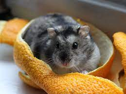
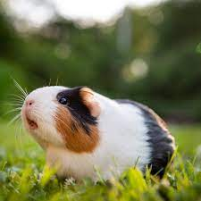

Bagel, the beagle & Vern

Bagel is our 12 years-old tricolor beagle. She was the first 'baby' of the family. She came to us at 12 weeks old as a wedding gift, air shipped from Missouri to Indiana.
Bagel is the pet with most privileges in our home.
Then, came Vern... The puppy. Vern was recently adopted from a shelter. He is a black labrador-retriever and has adapted very well to the family (well... as long as he doesn't pest Bagel to play or try to run after the cat...)
Bobo, the cat-licious
Bobo was also recued from a shelter as a kitty. He is an outdoor/indoor cat. He has hunted baby bunnies, baby birds and baby mice. He loves to sleep during the day in someone else's bed
(usually Bagel's or one of the kids' bed).
He is very independent and active! He is well-known in the neighborhood as he visits other people's yards while exploring the outdoors.
Deceased Rodents & Runaways
 
I will start talking about Mr. Nibbles (the dwarf hamster). He came after Bagel and before Bobo. He was a lovely birthday gift to our daughter when she turned 7.
Unfortunatelly, he only lived to 28 days.
It was hard to say goodbye so soon, so we wrote a booklet and built a powerpoint with facts about him. Now his remains rest in peace in our frontyard, along with his running ball.
Mickey, the guinea pig, lived longer than Mr. Nibbles... close to 1 year. We don't know exactly what happened to him, as he disappeared while on the backyard. Perhaps a hawk got him... we will never know.
We have lovely memories of the kids reading to him, bathing him or just cuddling with him.
Finally... the runaway turtle! She (or he) didn't get to have a name. Our middle daughter (the same one whom got Mr. Nibbles as a birthday gift) found this turtle on the road while biking from school with dad.
They decided to bring it home...
We tried to find it's owner, and thought of keeping it as ours, but she runaway before any of these options! Hope she is safe and sound.